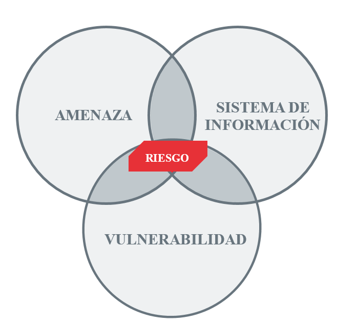

tema4-1

Amenaza, riesgo y vulnerabilidad AmenazaLas amenazas pueden proceder de ataques (fraude, robo, virus),
sucesos físicos (incendios, inundaciones) o negligencia y decisiones institucionales (mal manejo de
contraseñas, no usar cifrado). Desde el punto de vista de una organización pueden ser tanto internas
como externas. RiesgoEl riesgo se mide asumiendo una determinada vulnerabilidad
frente
a cada tipo de peligro. Si bien no siempre se hace, debe distinguirse adecuadamente entre peligrosidad
y, vulnerable y riesgo. VulnerabilidadUna vulnerabilidad (en términos de informática) es una debilidad
o
fallo en un sistema de información que pone en riesgo la seguridad de la información pudiendo permitir
que un atacante pueda comprometer la integridad, disponibilidad o confidencialidad de la misma.
Tipos de vulnerabilidades De accesoSon todas aquellas vulnerabilidades que son comprometidas al no
tener control sobre los usuarios que pueden acceder a determinada información confidenical de la
empresa
u organización.
De validaciónSon aquellas vulnerabilidades donde se presenta principalmente
la
suplantación de identidad para acceder a los archivos confidenciales de una empresa o organización.